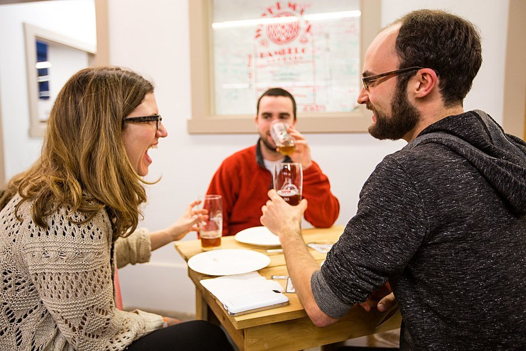

Bone Density After 50: How to Protect It
Bone loss quietly speeds up in your 50s, in both women and men, often with no symptoms until a fracture reveals it. Here's what's happening and the habits with the best evidence for slowing it down.

Key takeaways
- Bone loss accelerates after 50, roughly 1 to 3% of mass per year without treatment, fastest for women in the years right after menopause.
- Weight-bearing and resistance exercise has the strongest evidence of any single habit for slowing bone loss.
- Calcium and vitamin D support bone health but work alongside exercise, not as a substitute for it.
- Men get osteoporosis too, though it's screened for far less often than in women.
- A low-trauma fracture after 50 is a red flag worth a bone density conversation with your doctor, not just a bad-luck injury.
Bone density after 50 drops because bone-building cells gradually lose ground to bone-breakdown cells, a shift that speeds up further for women after menopause due to falling estrogen. The most protective habits are weight-bearing exercise, resistance training, and adequate calcium and vitamin D, each addressing a different part of the problem. A bone density scan is the only way to know your actual numbers rather than guess from symptoms, since early bone loss causes none.
Here's a closer look at why this happens, what genuinely slows it, and when testing is worth bringing up.
Why does bone density drop faster after 50?
Bone is living tissue that's constantly being broken down and rebuilt in a balanced cycle through most of adulthood. Starting around midlife, breakdown gradually outpaces rebuilding. For women, the drop in estrogen around menopause removes a hormone that had been helping protect bone, which is why NIAMS notes bone loss is fastest in the first several years after menopause, then continues at a slower pace afterward. Men lose bone more gradually across the same decades, driven by aging itself along with declining testosterone in some men.
How much bone density do you actually lose?
| Stage | Typical pattern |
|---|---|
| First 5 years post-menopause (women) | Fastest bone loss period, several percent per year possible |
| Both sexes, after 50, untreated | Roughly 1 to 3% of bone mass per year, per Mayo Clinic |
| Men, gradual aging | Slower, steadier decline than the post-menopause drop in women |
| With treatment or strong prevention habits | Loss can be significantly slowed; some rebuilding is possible with medication |
These are population averages, not a guarantee for any one person. Genetics, activity level, diet, smoking status and certain medications all shift individual results in either direction.
What's the single most effective thing you can do?
Weight-bearing and resistance exercise has the most consistent research behind it, because bone responds directly to mechanical stress by adding density where it's needed. Walking counts as weight-bearing but is relatively gentle; jogging, stair climbing, dancing, hiking and especially resistance training with weights or bands provide a stronger stimulus. This connects closely with what we cover in hip mobility exercises for adults over 50, since the same consistency that protects joints also protects the bone around them.
How much calcium and vitamin D do you need?
Mayo Clinic cites a daily calcium target around 1,200 mg for women once they reach 50, noting the National Academies set a combined diet-plus-supplement upper limit of roughly 2,000 mg a day for people over 50, since more isn't automatically better and very high intakes carry their own risks. Vitamin D needs are generally at least 600 IU daily, rising to 800 IU after age 70, since it's required for the body to actually absorb and use calcium. Dairy, leafy greens, fortified foods and moderate sun exposure cover much of this for many people, though some need a supplement to close the gap.
When should you get a bone density test?
A low-trauma fracture, breaking a bone from a minor fall or bump that shouldn't normally cause one, is one of the clearest signals to ask about testing at any age. Mayo Clinic also points to family history of osteoporosis or hip fracture, long-term steroid use, early menopause, and certain other medical conditions as reasons to test earlier. Many guidelines recommend routine bone density screening for women starting around 65, with earlier testing for anyone carrying extra risk factors. The test itself, a DEXA scan, is quick, painless and involves very low radiation exposure.
Can men get osteoporosis, and should they be screened?
Yes, and this is genuinely under-recognized. Osteoporosis is framed so heavily as a women's issue that men with real risk, low testosterone, long-term steroid use, heavy alcohol use, or simply advancing age past 70, often aren't screened until after a fracture already happens. If you're a man with any of these risk factors, it's worth raising bone density specifically with your doctor rather than assuming it only applies to women in your life.
Is bone loss after 50 reversible?
Mostly, no, not completely, through lifestyle changes alone, but it's absolutely something you can slow substantially, and in some cases partially improve. Weight-bearing exercise plus adequate calcium and vitamin D can meaningfully reduce the rate of further loss. When bone density has already dropped significantly, prescription medications exist that can slow loss further or, in some cases, help rebuild some bone. The realistic framing is slowing decline and preventing fractures, not expecting to return fully to the bone density you had at 30.
What foods actually support bone density?
- Dairy products (milk, yogurt, cheese) for calcium and often added vitamin D
- Leafy greens like kale and bok choy for calcium, though absorption varies by vegetable
- Fatty fish such as salmon and sardines for vitamin D
- Fortified plant milks and cereals for people avoiding dairy
- Adequate protein overall, since bone is partly protein, not just mineral
No single food or supplement replaces a varied diet and consistent movement. Smoking and heavy alcohol use both work against everything above, accelerating bone loss regardless of how well you otherwise eat or exercise.
Does walking alone protect bone density?
Partially. Walking is weight-bearing, which helps, but it's a lower-impact load than running, stair climbing or resistance work, so it tends to produce a smaller bone-density benefit on its own. It's a solid foundation, particularly for people who can't tolerate higher-impact activity because of joint pain, something our guide to low-impact exercises for bad knees addresses directly. Adding even light resistance training two or three times a week on top of regular walking gives bones a meaningfully stronger stimulus than walking provides by itself.
What about supplements like collagen or glucosamine?
These are usually discussed for joint comfort rather than bone density specifically, and the evidence behind them for actual bone mineral density is limited. Our deeper looks at collagen for joint pain and glucosamine and chondroitin cover what those ingredients are and aren't shown to do. If bone density itself is the concern, calcium, vitamin D and exercise remain the better-supported starting point, with medication reserved for cases a doctor identifies as needing more than lifestyle alone.
When should you see a doctor rather than just adjusting habits?
See a doctor if you've had any fracture from a minor fall, have a close relative with osteoporosis or a hip fracture, went through early menopause, have taken long-term steroid medication, or are simply unsure where you stand and want a baseline bone density scan. None of this requires waiting for a problem. Establishing a baseline in your 50s or 60s gives you and your doctor something concrete to track over time, instead of discovering a problem only after a fracture forces the conversation.
Frequently asked questions
How much bone density do you really lose after 50?
Without treatment, both men and women tend to lose roughly 1 to 3% of bone mass per year after 50, according to Mayo Clinic. Women lose bone fastest in the first few years after menopause, then the pace slows but continues.
What's the single most effective habit for bone density after 50?
Regular weight-bearing and resistance exercise has the strongest, most consistent evidence behind it, since bone responds directly to mechanical loading. Adequate calcium and vitamin D support that process but don't replace the need for actual load-bearing movement.
How much calcium and vitamin D do you need after 50?
Mayo Clinic cites a daily calcium target of around 1,200 mg for women once they reach 50, with a combined diet-plus-supplement upper limit of about 2,000 mg a day for people over 50. Vitamin D needs are generally at least 600 IU a day, rising to 800 IU after age 70.
When should you get a bone density test?
Ask your doctor if you've had a low-trauma fracture (one from a minor fall or bump), have a family history of osteoporosis or hip fracture, or have other risk factors like long-term steroid use or early menopause. Many guidelines also recommend routine screening for women starting around 65.
Can men get osteoporosis too?
Yes. Osteoporosis is more common in women, but men lose bone density with age as well and can develop osteoporosis, particularly after 70 or with risk factors like low testosterone, long-term steroid use or heavy alcohol use. It's often under-screened in men because it's seen as a women's condition.
Is bone loss after 50 reversible?
Established bone loss is hard to fully reverse through lifestyle alone, but it can be slowed significantly, and in some cases partially rebuilt, through consistent weight-bearing exercise, adequate calcium and vitamin D, and, when needed, prescription medication. The main realistic goal is slowing the rate of loss and preventing fractures.
Does walking help bone density?
Walking helps somewhat, since it's weight-bearing, but it's a relatively low-impact load compared with activities like jogging, stair climbing or resistance training. Walking is a reasonable foundation, especially for people who can't do higher-impact exercise, but pairing it with some form of strength training gives bones a stronger stimulus.
Related: Hip mobility exercises for adults over 50 · Collagen for joint pain · Glucosamine and chondroitin · Low-impact exercises for bad knees
Image: tedxsomerville / Openverse (Flickr) / CC BY 2.0